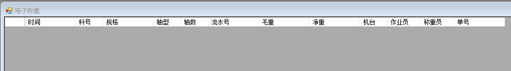
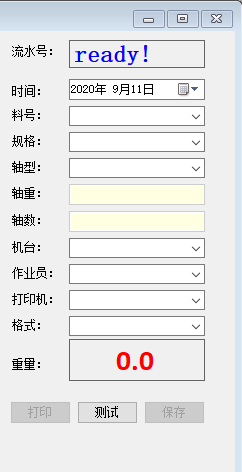

电子称方式

在电子称方式中，主要完成以下功能：
- 1， 计量称重。
- 2， 打印轴标签。
基本要素：
- 当选择完规格时，显示上次计量此类自动流水号。
- 当选择完轴型时，其下方显示轴重以及轴数
操作步骤：
- 点击“测试”，软件读取称重量。
- 点击“保存”，即保存本次称重，净重由毛重减去轴重，标签保存时自动打印。
- 录入或更新您的信息。
- 点击“保存”按钮。
操作提示：
- 每次开始计量称重时，数据显示区为空，左侧流水号显示 “Ready！"状态。
- 在实际称重操作中，按键盘R进入“测试”， 按键盘 S保存数据。
- 当你选择的轴数不是1，且大于1轴时进入多数称重状态（分轴装箱）
- 如需更改打印标签样式，进入手工方式，选中"D"复选 框，再点击打印，即进入设计标签样式。